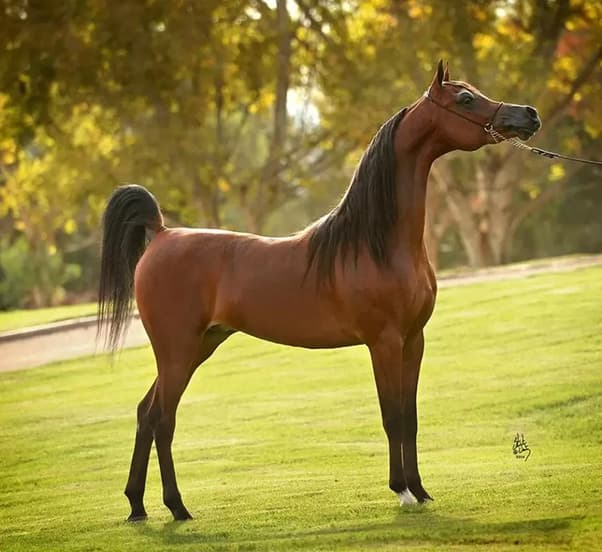
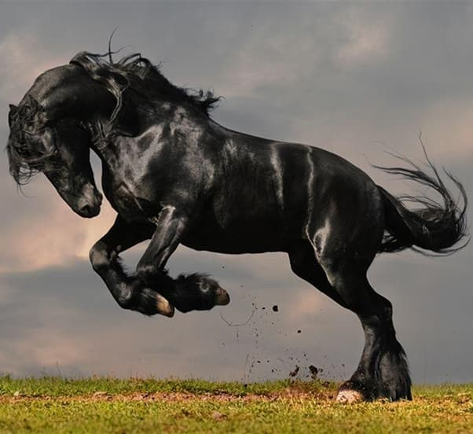
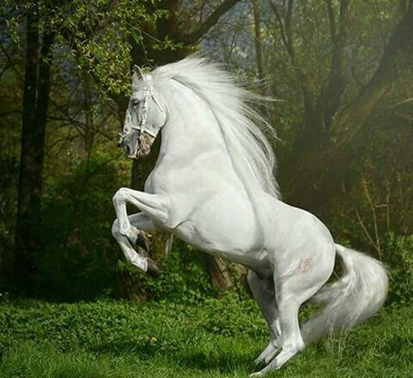
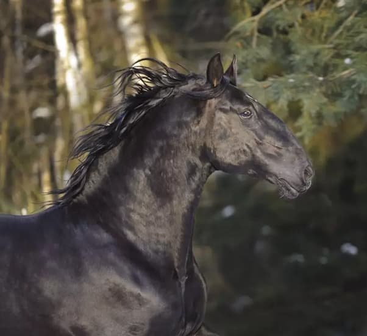
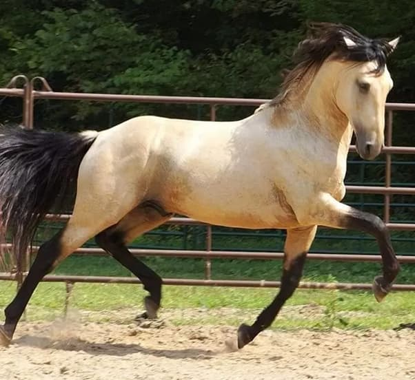
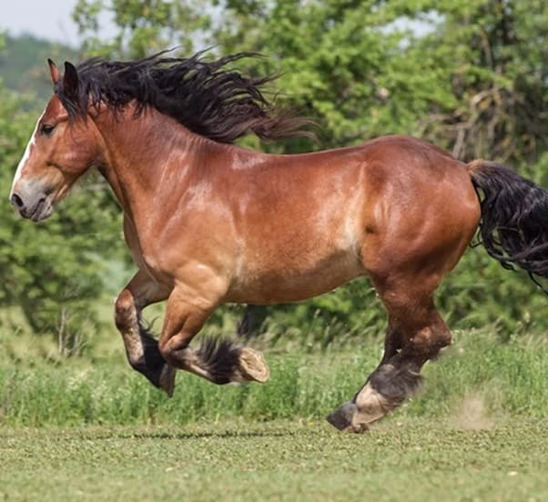

Since childhood I have admired horses - their strength, beauty and character. I had a beautiful album telling the story and breeds of horses. On this page I want to share with you the embodiment of freedom and passion.

The Arabian.

The Friesian.

The Andalusian.

The Kladruber.

The Lusitano.

The Trait Breton.
The horse (Equus ferus caballus) is a domesticated, one-toed, hoofed mammal. It belongs to the taxonomic family Equidae and is one of two extantsubspecies of Equus ferus. The horse has evolved over the past 45 to 55 million years from a small multi-toed creature, Eohippus, into the large, single-toed animal of today. Humans began domesticating horses around 4000 BCE, and their domestication is believed to have been widespread by 3000 BCE. Horses in the subspecies caballus are
domesticated, although some domesticated populations live in the wild as feral horses. These feral populations are not true wild horses, which are horses that never have been domesticated. There is an extensive, specialized vocabulary used to describe equine-related concepts, covering everything from anatomy to life stages, size, colors, markings, breeds, locomotion, and behavior.
Horses are adapted to run, allowing them to quickly escape predators, and possess a good sense of balance and a strong fight-or-flight response. Related to this need to flee from predators in the wild is an unusual trait: horses are able to sleep both standing up and lying down, with younger horses tending to sleep significantly more than adults. Female horses, called mares, carry their young for approximately 11 months and a young horse, called a foal, can stand and run shortly following birth. Most domesticated horses begin training under a saddle or in a harness between the ages of two and four. They reach full adult development by age five, and have an average lifespan of between 25 and 30 years.
Horse breeds are loosely divided into three categories based on general temperament: spirited "hot bloods" with speed and endurance; "cold bloods", such as draft horses and some ponies, suitable for slow, heavy work; and "warmbloods", developed from crosses between hot bloods and cold bloods, often focusing on creating breeds for specific riding purposes, particularly in Europe. There are more than 300 breeds of horse in the world today, developed for many different uses.
Horses and humans interact in a wide variety of sport competitions and non-competitive recreational pursuits as well as in working activities such as police work, agriculture, entertainment, and therapy. Horses were historically used in warfare, from which a wide variety of riding and driving techniques developed, using many different styles of equipment and methods of control. Many products are derived from horses, including meat, milk, hide, hair, bone, and pharmaceuticals extracted from the urine of pregnant mares.